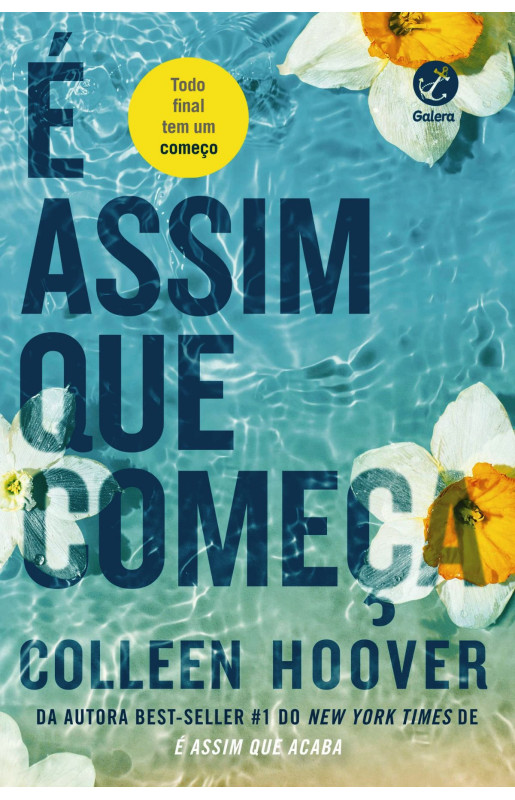

Livros que gosto
.jpeg)
O caçador de pipas - Khaled Hosseini
O livro narra a tocante história da amizade entre Amir e Hassan, dois meninos que vivem no Afeganistão da década de 1970. Durante um campeonato de pipas, Amir perde a chance de defender Hassan, num episódio que marca a vida dos dois amigos para sempre
ComprarImperfeitos - Christina Lauren
No livro, irmã de Olive, propõe a eles que aproveitem a viagem de lua-de-mel, que não é reembolsável, para uma ilha do Havaí. Mas há um “pequeno” problema: Olive e Ethan são inimigos mortais. Há um passado entre eles que tornou a convivência impossível. Mas quem vai dizer não para essa viagem?
Comprar.jpeg)
O meu pé de laranja lima - José Mauro de Vasconcelos
O livro narra as dificuldades econômicas que o impede de ter os mesmo que outras crianças vizinhas. A personagem possui alegria das fantasias infantis e o sofrimento precoce de quem aprendeu os desencantos da vida muito cedo.
Comprar
É assim que começa - Colleen Hoover
Este livrp narra a vida de Lily Bloom, uma mulher que sempre lutou para construir uma vida melhor para si mesma. Vinda de um lar marcado por violência e dificuldades, Lily encontra uma nova esperança ao conhecer Ryle Kincaid, um neurocirurgião carismático e determinado.
Comprar